笔记内容学自链接视频https://www.bilibili.com/video/BV1JJ41177di
JavaScript概述
javascript遵循ECMAscript标准，简称ES现在已经到了ES6，不过一些浏览器不支持6版本
入门
<!DOCTYPE html>
<html lang="en">
<head>
<meta charset="UTF-8">
<title>Hello World</title>
</head>
<body>
<script>
alert("HelloWorld!"); //alert弹窗
</script>
</body>
</html>
js代码可以写在单独的js文件中引用，也可以直接写HTML文件的script标签内
<!DOCTYPE html>
<html lang="en">
<head>
<meta charset="UTF-8">
<title>Hello World</title>
</head>
<body>
<script src="js/HelloWorld.js"></script>
</body>
</html>
alert("HelloWorld");
语法
变量
无需类型，javascript中变量都用var定义并用;结尾
js不区分小数和整数，但严格区分大小写
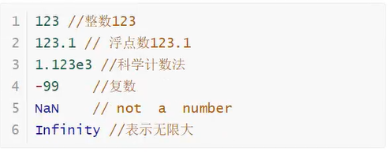
var a = 1;
var b = "这是一个变量";
var c = ["这是一个数组",1,2,3];
// new Array(1,2,3,4,5);
var d = {
name: "Atmujie",
age: 20,
string: "这是一个对象"
}
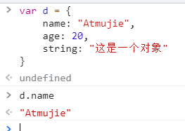
注意：ES6中规定，局部变量使用let
let a = 1;
let b = [1,2,3,4."aaa"];
let c = {
name: "Atmujie",
age: 20
}
条件控制
if (1 > 2){
alert("true");
} else if (1 == 1){
alert("false");
} else{
alert("瞎写的");
}
NaN不与任何数相等，包括它自己
判断一个值是否为NaN，只能用isNaN(变量)判断
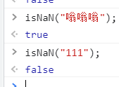
类型
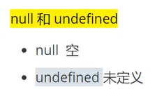
字符串编写
'use strict'
let name = "Mujie";
console.log(name);
console.log("你好"+name);
console.log(`
你好，${name} // ``支持${}输出变量
`);
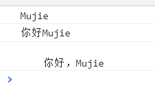
数组
js数组可包含任意的类型，并且长度可变
'use strict'
let arr = [1,2,3,4,5];
arr.length = 10; // 更改数组长度为10，无值的位置为空
arr.length = 3; // 更改数组长度为3，超过的部分会丢失
arr.indexOf(3); // 查找3在数组中的位置
arr.slice(1,5); // 截取1-5的元素，生成新数组
arr.push(6); // 压入一个元素到数组尾部
arr.pop(); // 弹出/删除数组尾部的元素
arr.unshift(0,2,3) // 压入元素到数组头部
arr.shift(); // 从数组头部弹出元素
arr.sort(); // 正序排序
arr.reverse(); // 反转数组
arr.concat(3,4,5,6,7); // 返回一个新数组并添加括号内的元素
arr.join("-"); // 用-连接数组元素
forEach（）方法
class forEach{
main(){
let arr = [1,2,3];
arr.forEach(function (value){
switch (value){
case 1 : console.log("foreach方法");
break;
case 2 : console.log("就是将数组中的每个元素依次拿出，交给forEach(方法1)中的方法1执行");
break;
case 3 : console.log("然后根据方法1的处理得出结果");
break;
}
});
}
}
new forEach().main();
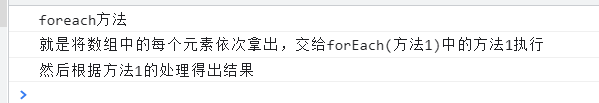
对象
let person = {
name: "XiaoMing",
age: 20,
score: 0
}
delete person.name; // 删除name属性
person.add = add; // 增加属性直接写属性名和值即可
'age' in person // 判断age是否在person中
// in 可以找到该对象父类的方法
preson.hasOwnProperty('age'); // 判断age是否在person中，不包括父类
流程控制
除数组遍历外其余均与java一致
'use strict'
let arr = [111,222,134,13211421,54545];
for (let num in arr){ // 使用for...in... 可以遍历数组，num得到的是数组的索引
console.log(arr[num]);
} // for...in...有一定的问题，应尽量不使用for...in...，
for (let num of arr){ // 使用for...of... 可以遍历数组，num得到的是数组的值
console.log(arr[num]);
}
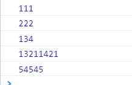
函数与方法
js函数在对象中称为函数，不在对象中称为方法
'use strict'
function abs(x){
if(x >= 0){
return x;
} else{
return -x;
}
}
//定义方法二
let abs = function(x){
........
}
正常来说，方法需要几个参数就只能传入几个参数，但js的方法可以传入任意的参数，方法内部只是按需索取
所以js规定了arguments关键字 ，该关键字定义了一个数组，表示传入的所有参数
let abs = function(x){
for (let i = 0; i < arguments.length; i++) {
console.log(arguments[i]);
}
}
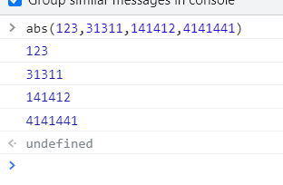
在ES6中，由于arguments获取参数需要写循环过于麻烦，所以引入了rest新特性
function abs(x,...rest){
console.log(rest);
}
// rest是一个包括除x之外所有参数的数组
// 使用rest需要在定义参数后加上...rest ，例如(x,...rest)

this指向问题
在一般语言中，this始终指向本类/方法中的属性，javascript也不例外
不过js自带一个apply方法，可以使方法的this指向其他对象的属性
'use strict'
var app = {
name: "Xiaoming",
abc : A
}
function A(){
return this.name;
}
console.log(app.abc()); // Xiaoming
console.log(A()); // null
console.log(A.apply(app,[])); // Xiaoming
/*apply(对象,传参[数组类型])*/
Map和SET集合
这是es6的新特性
Map
Map是一个可以自定义的对象
最基础的使用可以写为let myMap = new Map( [ ["name","XiaoMing"] , ["age",11] ] );
let myMap = new Map();
let keyObj = {};
let keyFunc = function() {};
let keyString = 'a string';
// 添加键
myMap.set(keyString, "和键'a string'关联的值");
myMap.set(keyObj, "和键keyObj关联的值");
myMap.set(keyFunc, "和键keyFunc关联的值");
myMap.size; // 3
// 读取值
myMap.get(keyString); // "和键'a string'关联的值"
myMap.get(keyObj); // "和键keyObj关联的值"
myMap.get(keyFunc); // "和键keyFunc关联的值"
myMap.get('a string'); // "和键'a string'关联的值"
// 因为keyString === 'a string'
myMap.get({}); // undefined, 因为keyObj !== {}
myMap.get(function() {}); // undefined, 因为keyFunc !== function () {}
Set
Set对象是值的集合，可以按照插入的顺序迭代它的元素。 Set中的元素只会出现一次，即 Set 中的元素是唯一的。
即Set的值不可重复，Map的值可重复
基本用法let mySet = new Set([1,2,4,7,9]);
let mySet = new Set();
mySet.add(1); // Set [ 1 ]
mySet.add(5); // Set [ 1, 5 ]
mySet.add(5); // Set [ 1, 5 ]
mySet.add("some text"); // Set [ 1, 5, "some text" ]
let o = {a: 1, b: 2};
mySet.add(o);
mySet.add({a: 1, b: 2}); // o 指向的是不同的对象，所以没问题
mySet.has(1); // true
mySet.has(3); // false
mySet.has(5); // true
mySet.has(Math.sqrt(25)); // true
mySet.has("Some Text".toLowerCase()); // true
mySet.has(o); // true
mySet.size; // 5
mySet.delete(5); // true, 从set中移除5
mySet.has(5); // false, 5已经被移除
mySet.size; // 4, 刚刚移除一个值
console.log(mySet);
// logs Set(4) [ 1, "some text", {…}, {…} ] in Firefox
// logs Set(4) { 1, "some text", {…}, {…} } in Chrome
严格检查模式
由于javascript代码极为简单，很容易因为语法不严谨产生问题，所以javascript有了严格检查模式
即在js代码前加上'use strict'
'use strict'
if (1 > 2){
alert("true");
} else{
alert("false");
}
严格检查模式是ES6的特性，必要写在第一行
控制台调试
console.log(变量名)打印一个变量
调试：
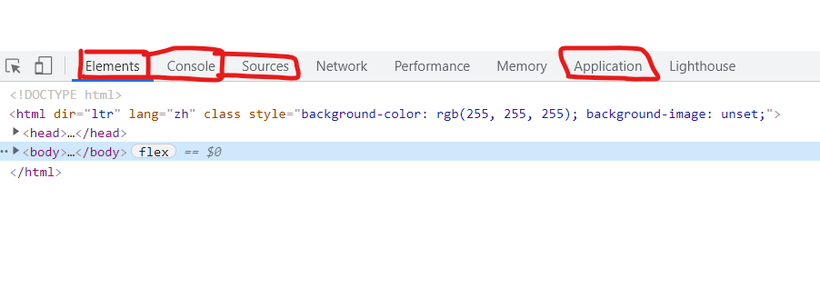
class类
JSON对象
目前流行的一种数据传输格式
'use strict'
class ABC{
Main(){
let me = {
name: "Atmujie",
password: "***"
}
return me;
}
}
let abc = new ABC();
// 将对象转化为JSON格式
let json = JSON.stringify(abc.Main());
console.log(json); // {"name":"Atmujie","password":"***"}
// 将JSON字符串转换为对象
let jsonde = JSON.parse(json);
console.log(jsonde);
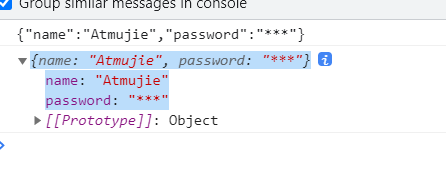
类的定义
'use strict'
class ABC{
//设置构造器
constructor(name) {
this.m = name;
}
main(){
alert(this.m);
}
}
new ABC("mujie").main();
原型继承
js存在原型的概念，原型和父类其实并无区别
所有类/方法/对象最终的原型都是Object
原型的指向可以用两种方式实现：
前端
js的方法
'use strict'
let A = {
name: "XiaoMing",
age: 10,
getAge: function(){
return this.name+"现在"+this.age+"岁了"
}
}
let B = {
name: "LiHua"
}
B.__proto__ = A;
console.log(B.getAge()); // LiHua现在10岁了
ES6后端习惯写法
class A {
name = "XiaoMing";
age = 10;
getAge(){
return this.name+"现在"+this.age+"岁了"
}
}
class B extends A{
name = "LiHua"
}
console.log(new B().getAge()); // LiHua现在10岁了
原型链继承图解
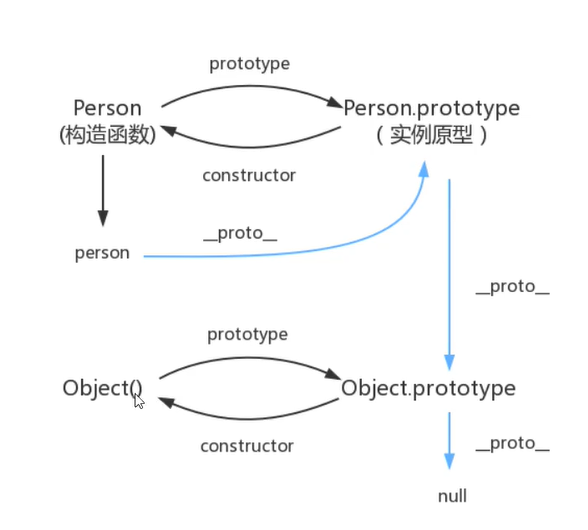
注：Object在不断的循环
操作BOM与DOM对象
BOM
BOM即为==浏览器对象模型==
操作BOM便是操作浏览器
==以下摘自菜鸟教程==
Window 对象
- 弹出一个警告框
- 弹出一个带折行的警告框
- 弹出一个确认框，并提醒访客点击的内容
- 弹出一个提示框
- 点击一个按钮时，打开一个新窗口
- 打开一个新窗口，并控制其外观
- 打开多个新窗口
- 确保新的窗口没有获得焦点
- 确保新的窗口获得焦点
- 关闭新窗口
- 检查新的窗口是否已关闭
- 返回新窗口的名字
- 传输一些文本到源（父）窗口
- 相对于当前位置移动新窗口
- 移动新窗口到指定位置
- 打印当前页面
- 用像素指定窗口大小
- 指定窗口大小
- 由指定的像素数滚动内容
- 滚动到指定内容处
- 一个简单的时钟
- 用setTimeout() 和 clearTimeout()设置和停止定时器
- 用setInterval() 和 clearInterval()设置和停止定时器
Navigator 对象
Screen 对象
History 对象
Location 对象
DOM
DOM即为document文档，这里指HTML文档
即DOM是对HTML的操作

通过可编程的对象模型，JavaScript 获得了足够的能力来创建动态的 HTML。
- JavaScript 能够改变页面中的所有 HTML 元素
- JavaScript 能够改变页面中的所有 HTML 属性
- JavaScript 能够改变页面中的所有 CSS 样式
- JavaScript 能够对页面中的所有事件做出反应
查找 HTML 元素
有三种方法：
- 通过 id 找到 HTML 元素
- 通过标签名找到 HTML 元素
- 通过类名找到 HTML 元素
通过 id 查找 HTML 元素
在 DOM 中查找 HTML 元素的最简单的方法，是通过使用元素的 id。
本例查找 id=”intro” 元素：
var x=document.getElementById("intro");
如果找到该元素，则该方法将以对象（在 x 中）的形式返回该元素。
如果未找到该元素，则 x 将包含 null。
通过标签名查找 HTML 元素
本例查找 id=”main” 的元素，然后查找 id=”main” 元素中的所有
元素：
var x=document.getElementById("main");
var y=x.getElementsByTagName("p");
通过类名找到 HTML 元素
本例通过 getElementsByClassName 函数来查找 class=”intro” 的元素：
var x=document.getElementsByClassName("intro");
修改HTML元素
修改内容
修改html的内容使用innerHTML/innerText方法
let x = document.getElementById("main").innerHTML = "新的内容";
let y = document.getElementsByTagName("p").innerHTML = "新的内容";
// innerHTML可以解析文本，innerText只能修改为字符
let m = document.getElementsByTagName("p").innerHTML = "<h1>111</h1>"; // h1标签样式的111
let n = document.getElementsByTagName("p").innerText = "<h1>111</h1>"; // 字符串<h1>111</h1>
修改属性
修改html标签的属性使用attribute
语法：
document.getElementById(id).attribute【属性名】 = 新属性;
document.getElementById(id).style.property【样式名】=新样式;
<!DOCTYPE html>
<html>
<body>
<img id="image" src="smiley.gif">
<p id="p1">Hello World!</p>
<script>
document.getElementById("image").src = "landscape.jpg";
//修改了src属性
document.getElementById("p1").style.color = "bule";
//修改了color为蓝色
</script>
</body>
</html>
删除HTML节点
<!DOCTYPE html>
<html lang="en">
<head>
<meta charset="UTF-8">
<title>Title</title>
</head>
<body>
<h1 id="h1">123456</h1>
<h1 id="h1.1">999999</h1>
<script>
//获取要删除的节点
let h1 = document.getElementById("h1");
//获取父节点
let father = h1.parentElement;
//通过父节点删除子节点
father.removeChild(h1);
/*也可以直接获取父节点删除子节点*/
</script>
</body>
</html>
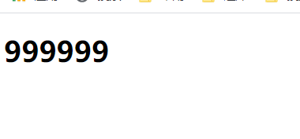
追加元素
<body>
<div id="re">
<h1 id="111">111</h1>
<h1 id="222">222</h1>
</div>
<script>
//获取父节点
let father = document.getElementById("re");
//创建新节点
let child = document.createElement("p");
//设置新节点id和值
child.id = "333";
child.innerHTML = "333";
//设置属性[此方法同样可以设置id]
child.setAttribute("style","color: blue");
// 或：child.style.color = "#66CCFF";
//将新节点插入父节点
father.appendChild(child);
</script>
</body>
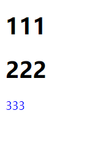
//插入到指定子节点前面
let h1 = document.getElementById("111");
father.insertBefore(child,h1);
//替换节点
father.replaceChild(child,h1);
/*语法： ...(新节点,已有节点)*/
操作表单
表单操作同上，但有些许不同
[属性].checked; // 查看该属性是否被选中，返回值为true或flase
提交表单-按钮绑定
<body>
<form action="#" method="post" >
<p>
<input type="text" id="name" name="names">
</p>
<button type="submit" onclick="funs()">提交</button>
</form>
<script>
// 可以进行修改加密等操作
function funs() {
let unname = document.getElementById("name");
unname.value = "Mujie";
return true;
}
</script>
</body>
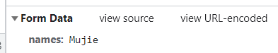
提交表单-表单绑定
<body>
<form action="https://www.baidu.com/" method="post" onsubmit="return funs()">
<p>
<input type="text" id="name" name="names">
</p>
<button type="submit">提交</button>
</form>
<script>
function funs() {
alert("跳转");
return false;
}
</script>
用表单绑定当funs() return false;时，表单无法提交，只有当funs() return true;时可以提交，所以建议使用这种方式
jQuery
jQuery是一个封装了大量js代码的工具类，可以理解为时一个库
使用jQuery可以去官网下载，也可以百度cdn
<script src="https://apps.bdimg.com/libs/jquery/2.1.4/jquery.min.js"></script>
公式：
$(选择器selector).行为action()
<html lang="en">
<head>
<meta charset="UTF-8">
<script src="https://apps.bdimg.com/libs/jquery/2.1.4/jquery.min.js"></script>
<title>jQ</title>
</head>
<body>
<button id="aaa">点击</button>
<script>
$('#aaa').click(function (){
alert("这是jQuery");
})
</script>
</body>
</html>
选择器
$("p").click(); // 标签选择器
$("#id").click(); // id选择器
$(".class").click(); // 类选择器
// 更多选择器查阅网站
// https://jquery.cuishifeng.cn/
事件 or 行为
事情一般分三种：鼠标，键盘，其他
鼠标事件
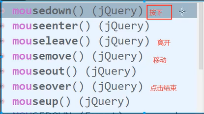
<body>
<button id="aaa">点击</button>
<script>
$("button").mousemove(
function (){
this.innerHTML = "快点";
}
); // 鼠标移动到按钮上显示
$("button").mouseout(
function (){
this.innerHTML = "快回来";
}
); // 鼠标离开显示
</script>
</body>
示例-输出鼠标坐标
<head>
<meta charset="UTF-8">
<script src="https://apps.bdimg.com/libs/jquery/2.1.4/jquery.min.js"></script>
<title>jQ</title>
<style>
#divMove {
border: 1px solid blue;
height: 500px;
width: 400px;
}
</style>
</head>
<body>
<!--<button id="aaa">点击</button><br/>-->
鼠标位置：<span id="spanMove"></span>
<div id="divMove">
在这里移动鼠标
</div>
<script>
$(function (){
//获取div
$("#divMove").mousemove(
function (e){
//获取span
$("#spanMove").text("x:" + e.pageX + "; y:" +e.pageY)
}
);
});
</script>
</body>
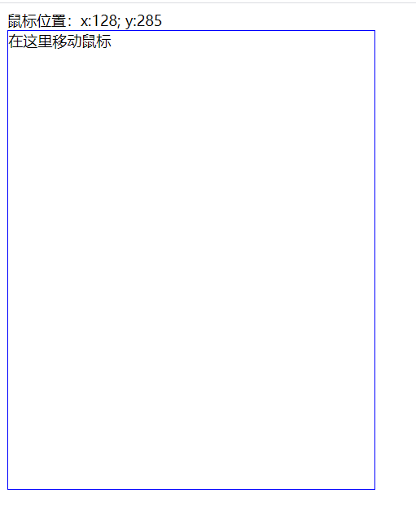
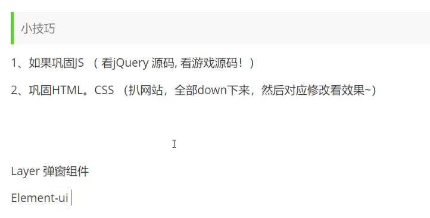